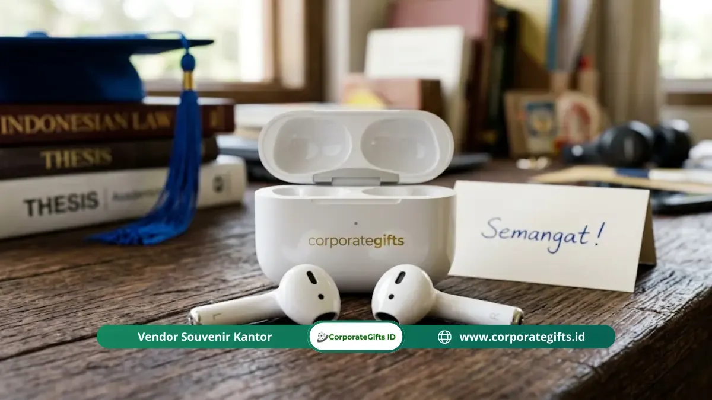

Corporate Gifts ID - Kado sidang skripsi teknologi terbaik adalah organizer kabel, earbuds wireless, dan lampu belajar LED portable, karena ketiganya langsung menyelesaikan masalah nyata yang dihadapi mahasiswa dan fresh graduate setiap hari: kabel yang kusut, gangguan saat bekerja, dan pencahayaan yang tidak memadai. Ketiga produk ini bisa diberikan satu per satu atau digabung menjadi satu paket kado teknologi dengan anggaran mulai dari Rp50.000 hingga Rp500.000.
Poin Kunci Kado Sidang Skripsi Teknologi:
- Organizer Kabel: Menghilangkan kekacauan kabel yang mengganggu produktivitas dan merusak tampilan meja kerja.
- Earbuds Wireless: Memberi kebebasan audio tanpa gangguan kabel saat belajar, bekerja, dan berolahraga.
- Lampu Belajar LED Portable: Mengurangi kelelahan mata selama jam kerja panjang tanpa bergantung pada pencahayaan ruangan.
- Format Fleksibel: Ketiga produk ini dapat diberikan secara individual atau digabungkan sebagai satu paket gift set teknologi.
- Alokasi Anggaran: Fleksibel mulai Rp50.000 untuk organizer kabel hingga Rp500.000 untuk earbuds wireless berkualitas.
Mengapa Masalah Kabel yang Kusut Layak Mendapat Perhatian Serius?
Kabel yang kusut bukan sekadar masalah estetika, melainkan sumber stres harian yang membuang waktu dan merusak kabel lebih cepat karena tekukan dan tarikan yang berulang.
Setiap mahasiswa aktif membawa setidaknya tiga kabel setiap hari: kabel pengisi daya laptop, kabel pengisi daya ponsel, dan kabel earphone. Kabel-kabel ini kusut di dalam tas, sulit ditemukan saat dibutuhkan, dan rentan rusak di titik tekukan karena penanganan yang tidak terstruktur.
Organizer kabel hadir dalam berbagai bentuk: roll case dengan slot elastis individual untuk setiap kabel, pouch gadget berkompartemen yang muat sekaligus charger, powerbank promosi fast charging, dan earphones, serta cable strap silikon yang melilit kabel secara rapi tanpa merusaknya.
Kado organizer kabel atau pouch gadget yang baik langsung memberikan dampak nyata pada kerapian tas dan efisiensi kerja penerima. Setiap kali penerima membuka tasnya dan menemukan semua kabel tersusun rapi, ia teringat pada perhatian Anda.
Earbuds Wireless: Kado yang Langsung Mengubah Pengalaman Kerja Sehari-hari
Earbuds wireless mengubah pengalaman kerja harian penerima secara signifikan dengan mengeliminasi gangguan kabel, memungkinkan mobilitas penuh, dan menyediakan kualitas audio yang mendukung konsentrasi.
Earbuds wireless atau TWS (True Wireless Stereo) telah menjadi aksesori teknologi paling populer di kalangan mahasiswa dan profesional muda Indonesia. Berdasarkan data IDC Indonesia, penjualan TWS di Indonesia tumbuh 31 persen secara year-on-year, dengan segmen harga Rp200.000-500.000 menjadi segmen dengan pertumbuhan tercepat.
Untuk kado sidang skripsi, earbuds wireless memberikan nilai nyata dalam tiga area penggunaan utama:
1. Fokus Belajar dan Bekerja
Earbuds dengan fitur passive noise isolation atau active noise cancellation (ANC) membantu penerima masuk ke zona konsentrasi lebih cepat, terutama saat bekerja di lingkungan yang bising seperti kafe atau ruang kerja bersama.
2. Mobilitas Tanpa Hambatan
Tanpa kabel yang menjerat gerakan, penerima dapat bergerak bebas dari meja ke meeting room, berjalan sambil menerima panggilan, atau berolahraga tanpa khawatir kabel tersangkut.
3. Kualitas Panggilan Video yang Lebih Baik
Microphone internal pada earbuds wireless modern sudah cukup untuk panggilan video profesional, wawancara kerja online, atau rapat virtual yang kini menjadi standar di banyak perusahaan.

Earbuds wireless TWS dengan custom branding atau ucapan personal menjadi kado sidang skripsi fungsional penunjang karir fresh graduate.
Bagaimana Cara Memilih Earbuds Wireless yang Tepat untuk Kado dengan Anggaran Terbatas?
Pilih earbuds wireless untuk kado berdasarkan tiga faktor utama: ketahanan baterai minimal 4 jam per pengisian, kualitas koneksi Bluetooth 5.0 ke atas, dan merek dengan layanan purna jual yang tersedia di Indonesia.
Tidak semua earbuds wireless layak dijadikan kado. Berikut kriteria seleksi yang perlu Anda terapkan:
1. Ketahanan Baterai
Pilih earbuds dengan ketahanan baterai minimal 4-5 jam per pengisian, dengan charging case yang menambah total daya hingga 20-24 jam. Earbuds yang mati di tengah perjalanan atau rapat menciptakan frustrasi, bukan produktivitas.
2. Versi Bluetooth
Bluetooth 5.0 ke atas memberikan koneksi lebih stabil, latensi lebih rendah untuk menonton video, dan konsumsi daya yang lebih efisien. Hindari earbuds dengan Bluetooth 4.x yang lebih rentan terputus.
3. Kenyamanan Pemakaian Panjang
Pilih earbuds dengan ear tip silikon yang tersedia dalam beberapa ukuran. Penerima yang memiliki ukuran telinga berbeda-beda membutuhkan opsi fit yang tepat agar earbuds tidak mudah jatuh dan nyaman dipakai lebih dari satu jam.
4. Reputasi Merek dan Garansi
Untuk kado, pilih merek yang memiliki layanan garansi resmi di Indonesia. JBL, Samsung Galaxy Buds, Anker Soundcore, dan QCY merupakan merek dengan jaringan servis yang cukup mudah diakses di kota-kota besar Indonesia.
Apa yang Perlu Anda Ketahui Sebelum Membeli Lampu Belajar LED Portable sebagai Kado?
Lampu belajar LED portable yang layak dijadikan kado harus memiliki color temperature yang dapat disesuaikan, intensitas cahaya yang bisa diatur, dan sumber daya USB agar kompatibel dengan power bank atau laptop penerima.
Lampu belajar LED portable mungkin tampak seperti kado yang sederhana, tetapi dampaknya pada kualitas kerja penerima cukup signifikan. Pencahayaan yang tepat mengurangi kelelahan mata selama jam kerja panjang, meningkatkan akurasi membaca dan menulis, dan menciptakan lingkungan kerja yang lebih kondusif saat harus lembur.
Fitur yang harus ada dalam lampu belajar LED portable untuk kado berkualitas:
1. Color Temperature yang Dapat Disesuaikan
Lampu dengan mode warm white (2700-3000K) nyaman untuk malam hari dan relaksasi, sedangkan cool white (5000-6500K) meningkatkan konsentrasi saat membaca atau bekerja. Lampu dengan dua mode atau lebih memberikan fleksibilitas terbaik.
2. Intensitas Cahaya yang Bisa Diatur
Tombol dimmer atau pengatur kecerahan memungkinkan penerima menyesuaikan cahaya dengan kebutuhan mata dan kondisi ruangan tanpa harus mengandalkan kecerahan maksimum yang melelahkan.
3. Daya USB atau USB-C
Lampu dengan input USB atau USB-C bisa penerima sambungkan ke power bank, laptop, atau adaptor USB yang sudah mereka miliki. Ini mengeliminasi kebutuhan baterai tambahan yang repot dan mencemari lingkungan.
4. Desain Portabel dengan Klip atau Stand Fleksibel
Klip yang bisa menempel di laptop, meja, atau buku memungkinkan penerima menempatkan lampu di posisi yang paling efektif. Stand fleksibel atau leher angsa memungkinkan pengarahan cahaya yang presisi.
Tiga aksesori teknologi ini bersinergi sempurna satu sama lain dan melengkapi pilihan kado sidang skripsi fungsional lainnya untuk menciptakan paket kado yang benar-benar komprehensif.
Perbandingan Kado Sidang Skripsi Teknologi Fungsional
Berikut matriks perbandingan ketiga kategori produk teknologi untuk membantu Anda merancang kado sidang skripsi yang paling tepat sasaran:
| Kategori Produk | Fungsi & Solusi Masalah | Fitur Kunci | Estimasi Budget | Tingkat Kegunaan |
|---|---|---|---|---|
| Organizer Kabel / Pouch Gadget | Mencegah kabel kusut dan melindungi adaptor dari kerusakan. | Slot elastis, sekat jaring, material water-repellent. | Rp50.000 - Rp150.000 | Sangat Tinggi (Harian) |
| Earbuds Wireless (TWS) | Mendukung fokus kerja, bebas kabel, audio video interview jernih. | Bluetooth 5.0+, baterai 4-5 jam + charging case 24 jam. | Rp200.000 - Rp500.000 | Esensial Profesional |
| Lampu Belajar LED Portable | Mencegah mata lelah saat lembur malam di meja kerja. | Multi-color temperature, dimmer sentuh, kabel daya USB. | Rp100.000 - Rp250.000 | Tinggi (Meja Kerja) |
| Paket Bundel Gadget Set VIP | Solusi 3-in-1 lengkap dalam presentation box eksklusif. | Pouch + TWS + Lampu LED + hardbox greeting card. | Rp350.000 - Rp750.000 | Hadiah Spesial Eksklusif |
Pertanyaan Seputar Kado Sidang Skripsi Teknologi (FAQ)
Kesimpulan
Organizer kabel, earbuds wireless, dan lampu belajar LED portable mewakili filosofi kado fungsional terbaik: setiap benda menyelesaikan satu masalah nyata yang penerima hadapi setiap hari.
Anda tidak memberikan hiasan. Anda memberikan alat kerja yang langsung mengubah kualitas keseharian penerima. Pilih berdasarkan anggaran dan kedekatannya dengan penerima, kemas dengan perhatian, dan hadirkan sebagai wujud nyata bahwa Anda memahami kebutuhan seseorang yang baru saja menyelesaikan babak penting dalam hidupnya.